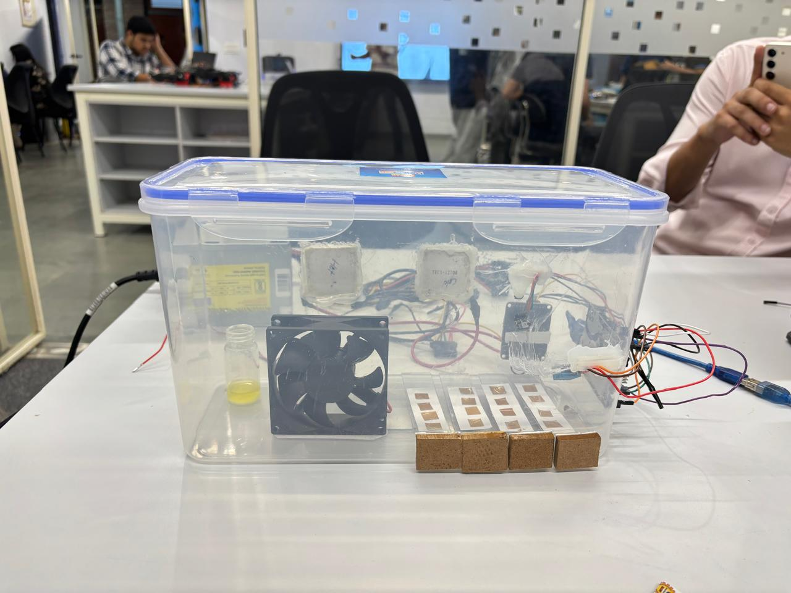

The prototype system
- Reusable wristband body & cartridge
- AgNP–PVA sensing films
- Instrumented experimental chamber
- Controller, logger & phone interface
AVARAN / INSIDE THE PROTOTYPE
A passive wristband. A replaceable sensing cartridge.
Explore the architecture, one layer at a time.
Original CAD geometry
Illustrative optical layers
Explore the materials, the experiments
and the work that comes next.
AVARAN AT A GLANCE
Silver nanoparticle composite film
Exposed sensor + protected comparison
Exposure at the badge; calibration pending
02 / PRELIMINARY EVIDENCE
Real exploratory trials, shown with their limitations. The extended trial is the clearest reported observation; early comparisons are subtle or ambiguous.
The team reports the clearest fading and blackish response in B5. The after photograph contains pronounced darker brown areas and an uneven appearance. Individual before/after patch identities are not established.
Preliminary qualitative trials. Exposure conditions are team-reported estimates, and photographs were captured under varying conditions. These images are not used for numerical calibration.
Glare, wrinkles, bubbles, framing and nonuniform film appearance affect comparison. Original image colour is preserved; the photographs are not aligned or normalized.
These images do not establish dose-response monotonicity, selectivity, equal-dose integration, shelf life or field accuracy. The approximately 12-hour trial does not prove shift-long performance. Its nominal concentration and duration cannot be treated as a verified integrated dose.
“Batch” in the source folders is a trial-group label, not proof of five independently manufactured lots. Photograph counts are not independent sample counts.
THE SENSING MATERIAL
Silver nanoparticles mixed with polyvinyl alcohol form the sensing film. The intended chemical response is silver-sulfide formation under H₂S exposure, with a change in appearance that a phone could measure.
Prepare the AgNP–PVA composite and cast it into a film. Real cast-film photographs are supplied.
Cut matching patches and inspect their uniformity. The supplied protocol proposes quality checks; completed numerical QC is not established.
Use consistent opaque white backing. One patch is exposed; the other is placed behind its intended protective cover.
The proposed workflow measures colour against characterized references. Independent exposure calibration is the next step.
Exact formulation, drying conditions and measured thickness are unconfirmed. Preparation and validation steps described in the method document are proposed procedures, not proof they were all performed.
03 / THE EXPERIMENTAL SETUP
The team built a chamber, an Arduino-based controller and a desktop logger to explore film response. The electronics belong to the laboratory setup.

Front view: 5 Arduino Uno · 6 DHT11 · 7 H₂S sensor · 9 power supply. Select a marker or component to inspect it.
SIGNAL & CONTROL FLOW · SCHEMATIC
Temperature is controlled; humidity is measured. Geometry and placement in this diagram are illustrative.
Original operation video. It is not synchronized to the controller recording below.
This is an experimental laboratory setup, not a certified gas chamber or safety alarm. Gas work requires qualified supervision, containment and appropriate laboratory procedures.
04 / RECORDED INSTRUMENTATION
Explore an approximately one-hour controller session from 30 September 2026. This trace demonstrates logging and heating control; it is not linked to the photographed patch trials.
30 Sep 2026 · 15:36–16:36 IST · 1,781 rows
Baseline not captured
Loading recorded data…
Concentration unavailable: baseline not captured.
Recorded experimental controller data. H₂S concentration is a provisional datasheet-derived estimate, not calibrated reference ground truth. Missing and out-of-range readings remain unquantified. This recording is not linked to the photographed patch batches.
727 rows have no baseline, 22 are capturing a baseline, 813 are below the model range, 21 report environmental sensor errors, 12 exceed the range, and 186 contain numeric estimates. Below range is unquantified, not zero.
1,760 environmental readings were valid: temperature 28.8–30.2 °C and humidity 54.2–60.8% RH. The raw ADC spans 18–954. Numeric ppm estimates span 1.084–8.017 ppm.
Heating appears in 660 rows; both relays are off in 1,121. Cooling is a hardware capability, not an observed event in this trace. The electronic sensor curve is separate from any patch-colour prediction model. No full-session cumulative dose is calculated.
Gaps remain gaps. The replay uses timezone-aware wall-clock timestamps; speed changes playback only. Source: H2S_2026-09-30_15-36-18-703.csv.
05 / THE PHONE READER
Explore the team's working reader interface. The screens show a practical path from capture to record keeping; independent exposure calibration remains ahead.
ORIGINAL READER SCREENSHOTSELECT A SCREEN ABOVE · CLICK TO ENLARGE
The dashboard opens with an empty reading and a route to scan a patch. It shows the product workflow before a validated dose model is available.
THE INTENDED READING PATH
01 — 04Capture the contextRecord shift duration and photograph the patch with its optical references.
Locate the pairIdentify the exposed and reference regions in a controlled image.
Estimate exposureApply a future mapping tested against independent reference measurements.
Keep the recordPresent the estimate with its units, time and quality information.
INTENDED OUTPUT · EXPOSURE AT THE BADGE
D = ∫ C(t) dt ppm·hCumulative exposure over time. A shift average requires valid wearing duration; neither number measures bodily absorption.
Dose values, calibration settings and safety bands visible in the reader are provisional interface examples. The current film response has no independently validated colour-to-dose predictor, and the displayed categories are not certified safety decisions.
06 / WHERE THE PROJECT STANDS
AVARAN is developing a passive AgNP–PVA wristband for smartphone-based estimation of cumulative H₂S exposure. Numerical calibration and independent prediction validation remain in development.
TEAM AVARAN
SIH26118 · Faculty mentor: Dr. Vinayak Majhi
SOURCE MATERIAL
Original final CAD, prototype photographs, trial images, application screenshots and recorded controller data supplied by the team. The method protocol is development guidance.